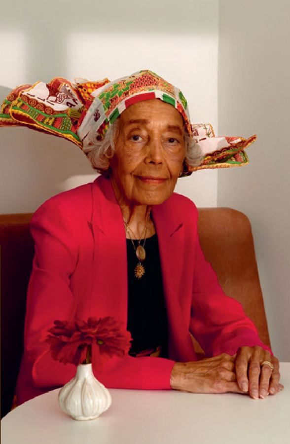

✒️

Klaar om te lezen?
Je leest een interview met Judith de Kom over haar vader Anton de Kom: schrijver, vrijheidsstrijder en verzetsheld. Je beantwoordt tien vragen. Bij letterlijke vragen markeer je het antwoord in de tekst zelf. Klik woorden aan om ze te selecteren.
🔍 Letterlijk – markeer in de tekst
💡 Afleidend
💬 Evaluerend
🏅
Goed gedaan, interviewlezer!
0/0